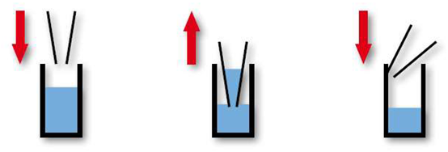
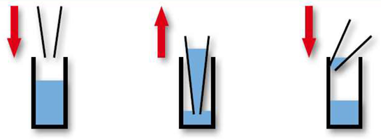

Contribution
Our Contribution To The iGEM Community

Lab instructions
Overnight Pre-cultures
work space: clean bench
Escherichia coli
Material
- LB-medium
- corresponding antibiotics (concentration: )
- agar plate with strain
- sterile (glas) test tube
- (Micro-)Pipette
- (toothpick)
Conservation
37°C for 16-18h, best shaking
Procedure
- pipette 5 mL LB-medium into test tube
- add 5 μL of antibiotics
- pick one colony of agar plate with toothpick/tip of pipette and throw it in test tube
- leave it shaking at 37° C over night
Saccharomyces cerevisiae
Material
- YEP-medium
- corresponding antibiotics (concentration: )
- agar plate with strain
- sterile (glas) test tube
- (Micro-)Pipette
- (toothpick)
Conservation
28° C for 1-2 days, best shaking
Procedure
- pipette 5 mL YEB-medium into test tube
- add 5 μL of antibiotics
- pick one colony of agar plate with toothpick/tip of pipette and throw it in test tube
- leave it shaking at 28° C over 1-2 nights
Pipetting techniques
- for usage of modern pipettes, like micropipettes
- tips are normally for single usage
Tips and tricks
- best results by using tips offered/recommended by manufacturer of pipette
- when aspirating the medium, hold pipette in as vertical position as possible
→ volume deviations can occure as angle of inclination increases - pre-wetting the tip improves pipetting accuracy in all techniques by rising the humidity in tip
→ causes less evaporation - stripping of droplets adhering to tip avoids transfer of additional liquid
- stack two tips on top of each other to make it longer and reach even into deep vessels
| Forward Pipetting | Reverse Pipetting | |
|---|---|---|
| Notes | most used, less concentration needed | |
| For what? | standard solutions, e.g. water, buffer, diluted saline solutions/acids/alkalis, etc. | viscous liquids, e.g. glycerin, solutions with high vapor pressure (e.g. hot water) |
| How? | suction of liquid without using overstroke, subsequent delivery with overstroke | suction of liquid using overstroke, subsequent delivery without overstroke → rest of liquid remains in tip and is discarded! |
Forward Pipetting

| 1 | 2 | 3 |
| Press button up to 1st stop. Immerse tip a few millimeters into liquid. | Release button slowly. Tip fills up. | Dispense liquid by pressing up to 1st stop. Then blow out rest by pressing up to 2nd stop. |
| Starting position | 1 | 2 | 3 | 4 |
|---|---|---|---|---|
| 1st stop | ⬇ | ⬆ | ⬇ | |
| 2nd stop | ⬇ | ⬆ |
Reverse Pipetting

| 1 | 2 | 3 |
| Press button up to 2nd stop. Immerse tip a few millimeters into liquid. | Release button slowly. Tip fills up. | Dispense liquid by pressing up to 1st stop. Rest of liquid remains in tip. |
| Starting position | 1 | 2 | 3 | 4 |
|---|---|---|---|---|
| 1st stop | ⬇ | ⬇ | ⬆ | |
| 2nd stop | ⬆ |
Parts
During our project we expressed a part of IF1, which is a bovine ATPase inhibitor, as well as a fusion protein in E. coli.
Both parts could not be found in the parts registry. Thus, we decided to make them available for future iGEM Teams in the iGEM
parts registry so that they can retrieve the sequence if they need these proteins as well.
I1-60GFPHis - ATPase Inhibitor with GFP and His-Tag
The first part is a composite part coding for the first 60 residues of the bovine ATPase inhibitor IF1 followed by an eGFP-
and a His-Tag. Its expression is regulated by a Lac-Operon consisting of LacI, LacO and a T7 promoter and terminator.

I1-60 - ATPase Inhibitor
The sequence of the eGFP- and the His-Tag have already
been entered in the parts registry. Therefore we only needed to add the sequence of the first 60 residues of IF1 in order to be able to create the composite part BBa_K3456000. These first 60 residues of IF1
have been uploaded as the basic coding part BBa_K3456001. It is the second part whose sequence has been contributed to the part registry by us.
MBP-1 - cecropin A fusion protein
The third sequence we contributed to the parts registry codes for MBP-1...